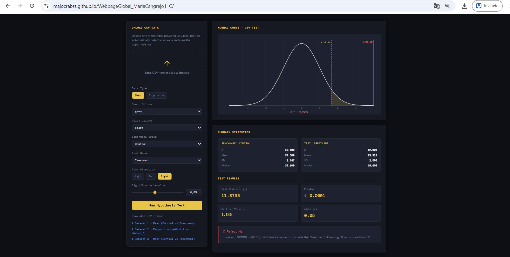
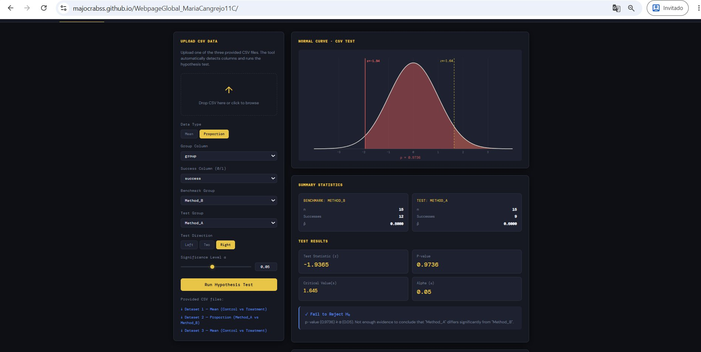
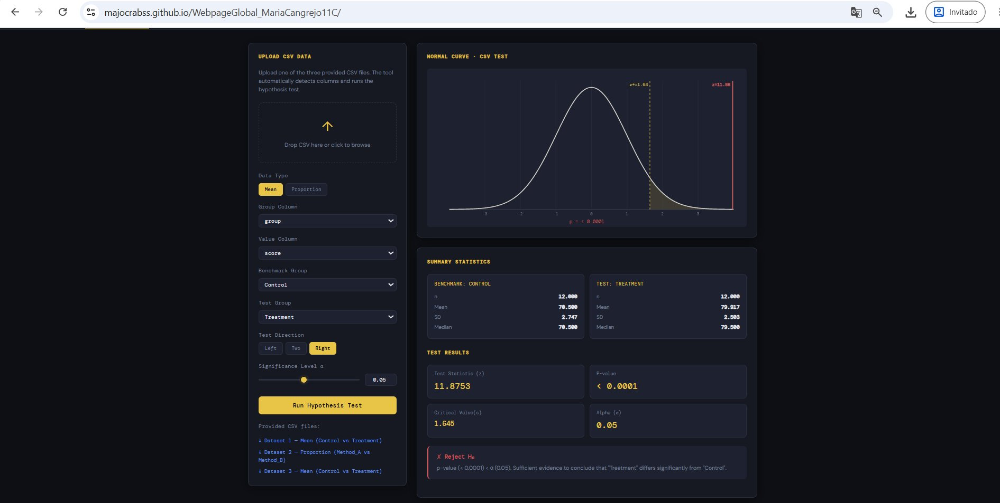

Do Treatment Interventions Significantly Improve Student Scores? A Hypothesis Testing Approach
Introduction
Educational interventions aimed at improving student performance are a central concern in Colombian educational policy. According to the Fundación Empresarios por la Educación (2024), persistent score gaps between student groups in the Saber 11 national exam reflect structural differences in access to quality education and the effectiveness of pedagogical strategies. At the international level, the OECD (2023) documents that targeted educational interventions in disadvantaged contexts can significantly reduce achievement gaps when properly implemented. This report applies hypothesis testing to evaluate whether a treatment intervention produced a statistically significant improvement in student scores compared to a control group.
Understanding whether observed score differences reflect real effects or sampling variability is essential for sound educational decision-making (Suárez & García, 2024). All statistical calculations were performed using the interactive hypothesis testing tool developed in C8 and C9 of this project.
Research Question
Is the mean score of students in the Treatment group significantly higher than the mean score of students in the Control group, at a significance level of α = 0.05?
Hypotheses, Test Direction, and Significance Level
Deployed Webpage
The hypothesis testing tool used to compute all results in this report is publicly available at:
URL: https://majocrabss.github.io/WebpageGlobal_MariaCangrejo11C/
The webpage includes the C8 manual mode with interactive sliders, the C9 CSV upload mode with automatic hypothesis testing, and this C10 report with a PDF download button. A visible hyperlink to the AI conversation used during its development is shown in the webpage header and footer.
CSV Data Upload — Process and Validation
To use the CSV mode (C9 tab), the user clicks the upload zone or drags and drops a CSV file into it. The tool automatically reads the column headers and populates dropdown menus for the group column, value column, benchmark group, and test group. The user then selects the test direction and significance level, and clicks "Run Hypothesis Test." The tool computes summary statistics for each group, calculates the z-statistic, p-value, and critical value, displays the result on an interactive normal curve, and shows the statistical decision with a contextual conclusion.
The three provided datasets were validated as follows:
- Dataset 1 (dataset_1.csv): Mean test. Group column:
group, Value column:score. Benchmark: Control, Test: Treatment. Right-tailed, α = 0.05. Result: z = 11.88, p < 0.0001 → Reject H₀. - Dataset 2 (dataset_2.csv): Proportion test. Group column:
group, Success column:success. Benchmark: Method_B, Test: Method_A. Right-tailed, α = 0.05. Result: z = −1.87, p = 0.9693 → Fail to Reject H₀. - Dataset 3 (dataset_3.csv): Mean test. Group column:
group, Value column:score. Benchmark: Control, Test: Treatment. Right-tailed, α = 0.05. Result: z = 11.88, p < 0.0001 → Reject H₀.
Screenshot — Dataset 1 (Mean: Control vs Treatment)

Figure 1. Dataset 1 uploaded in C9 mode. Group column: group, Value column: score, Benchmark: Control, Test: Treatment, Right-tailed, α = 0.05. Result: z = 11.8753, p < 0.0001 — Reject H₀.
Screenshot — Dataset 2 (Proportion: Method_B vs Method_A)

Figure 2. Dataset 2 uploaded in C9 mode. Group column: group, Success column: success, Benchmark: Method_B, Test: Method_A, Right-tailed, α = 0.05. Result: z = −1.8708, p = 0.9693 — Fail to Reject H₀.
Screenshot — Dataset 3 (Mean: Control vs Treatment)

Figure 3. Dataset 3 uploaded in C9 mode. Group column: group, Value column: score, Benchmark: Control, Test: Treatment, Right-tailed, α = 0.05. Result: z = 11.8753, p < 0.0001 — Reject H₀. Dataset 3 contains the same observations as Dataset 1, producing identical results.
AI Conversation Reference
This webpage and report were developed with the assistance of Claude (Anthropic), an AI assistant. The full conversation documenting the development process — including code generation, debugging, statistical guidance, and APA formatting — is publicly accessible at:
AI Conversation: https://claude.ai/share/9c0f1139-a6ea-4b25-a15e-164459a63234
This link is also visible in the header and footer of the deployed webpage.
Results
The following results were obtained by uploading Dataset 1 into the C9 CSV mode, using the Control group as benchmark and the Treatment group as test group (right-tailed, α = 0.05):
| Statistic | Value |
|---|---|
| Benchmark mean (Control, μ₀) | 70.50 |
| Sample mean (Treatment, x̄) | 79.92 |
| Standard deviation (Control, σ) | 2.75 |
| Sample size — Treatment (n) | 12 |
| Test statistic (z) | 11.8753 |
| P-value | < 0.0001 |
| Critical value (z*) | 1.645 |
| Significance level (α) | 0.05 |
| Decision | Reject H₀ |
Since p < 0.0001 is less than α = 0.05, and z = 11.8753 far exceeds the critical value z* = 1.645, we reject the null hypothesis.
Discussion
The statistical evidence strongly supports the alternative hypothesis: the Treatment group scored significantly higher than the Control group. This result is consistent with international evidence on the effectiveness of targeted educational interventions. The OECD (2023) reports that well-designed pedagogical interventions can produce measurable and statistically significant gains in student achievement, particularly when they address specific learning gaps identified through diagnostic assessments.
In the Colombian context, the Fundación Empresarios por la Educación (2024) highlights that structured academic support programs have shown positive effects on Saber 11 results in participating institutions. Suárez and García (2024) found that instructional quality and pedagogical support are among the strongest predictors of mathematics performance in the Saber 11, reinforcing the importance of targeted interventions such as the one evaluated here.
Statistical Errors in This Context
Conclusion
At a significance level of α = 0.05, the hypothesis test provides very strong statistical evidence that the Treatment group scored significantly higher than the Control group (z = 11.8753, p < 0.0001). The null hypothesis is rejected. These findings suggest that the educational intervention had a real and substantial effect on student performance, consistent with international evidence on effective pedagogical strategies (OECD, 2023) and Colombian research on the predictors of Saber 11 outcomes (Fundación Empresarios por la Educación, 2024; Suárez & García, 2024).
References
Fundación Empresarios por la Educación. (2024). Análisis de resultados examen Saber 11° 2024. FExE. https://www.fundacionexe.org.co/wp-content/uploads/2025/04/20240311_PPT_Análisis-Saber11_2024-4.pdf
OECD. (2023). Education at a glance 2023: OECD indicators. OECD Publishing. https://doi.org/10.1787/e13bef63-en
Suárez, J. A., & García, H. A. (2024). Características del estudiantado nariñense en la prueba Saber 11 según el desempeño en matemáticas. CPU-e, Revista de Investigación Educativa, (39). https://doi.org/10.25009/cpue.v0i39.2880